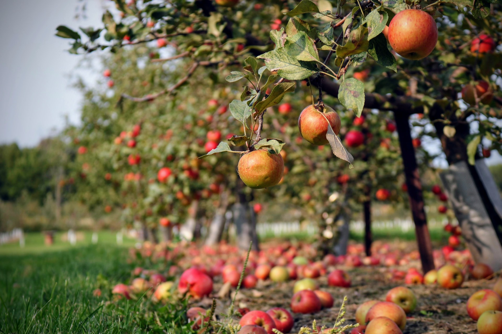

After Honeycrisp and Winesap have fallen,
another season begins. The orchard glistens
adorned in rose-gold fruit. Branches creak,
music of surrender.
On tiptoe my son shakes gnarled limbs
bringing a shower of blushing apples.
He gifts me the pretty one laced
with wormholes. He runs ahead,
slipping from me. As his shadow lengthens,
another season begins. The orchard glistens.
My son crushes fruit underfoot, their splitting,
music of surrender.
Sayuri Ayers